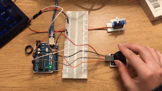
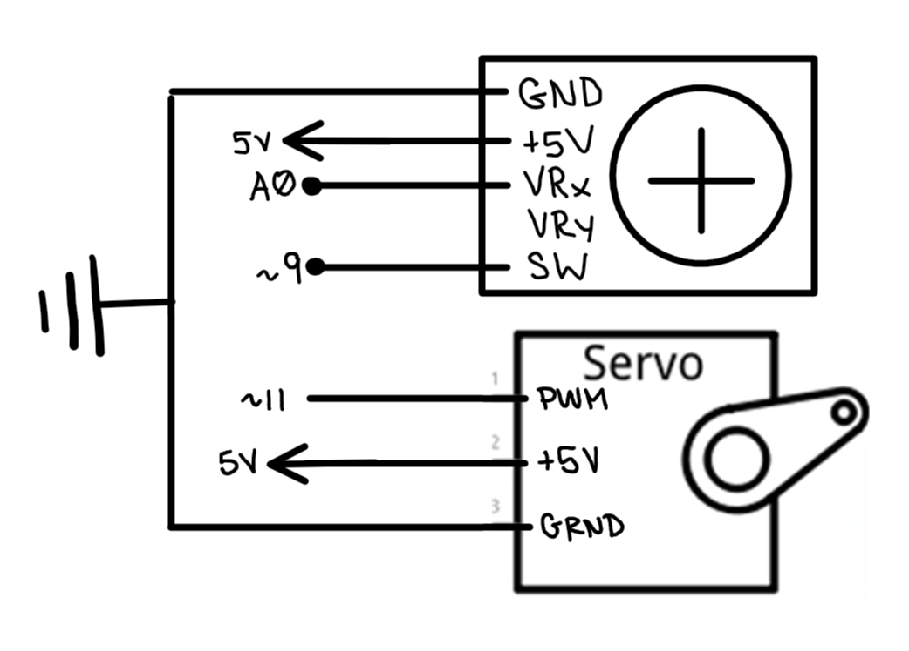

// import servo library (some servo code sampled from Knob example code by Scott Fitzgerald)
#include
Servo myservo; // create servo object to control a servo
// constants won't change
int xPin = A0; // declare pin A
int yPin = A1; //
void setup() { // put your setup code here, to run once:
Serial.begin(9600);
pinMode(yPin, INPUT); // initialize yPin as input
myservo.attach(11); // attaches the servo on pin 11 to the servo object
}
void loop() { // put your main code here, to run repeatedly:
buttonState = digitalRead(buttonPin); // read the state of the button value
myservo.write(180 - analogRead(yPin) * 0.175);
Serial.print("You have turned the servo");
Serial.print(analogRead(xPin) * 0.175);
// delay(100); // add some delay between reads
// }
}